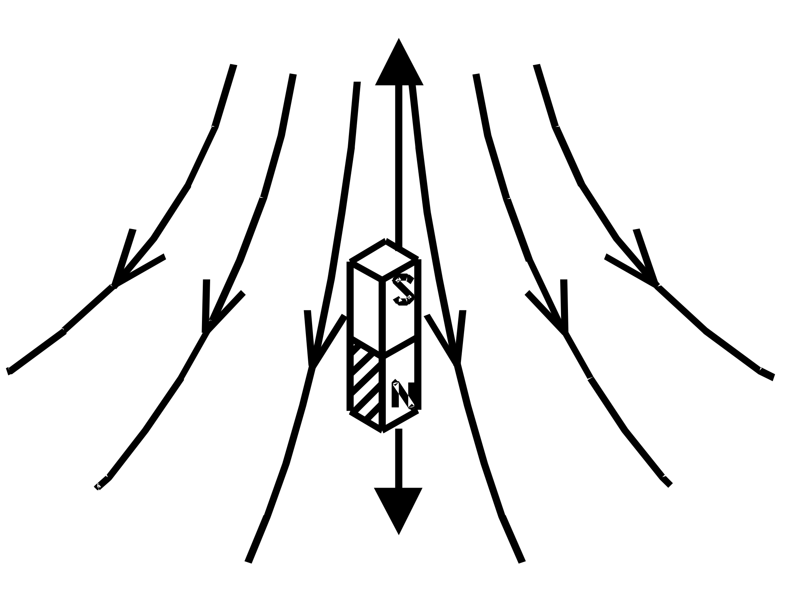
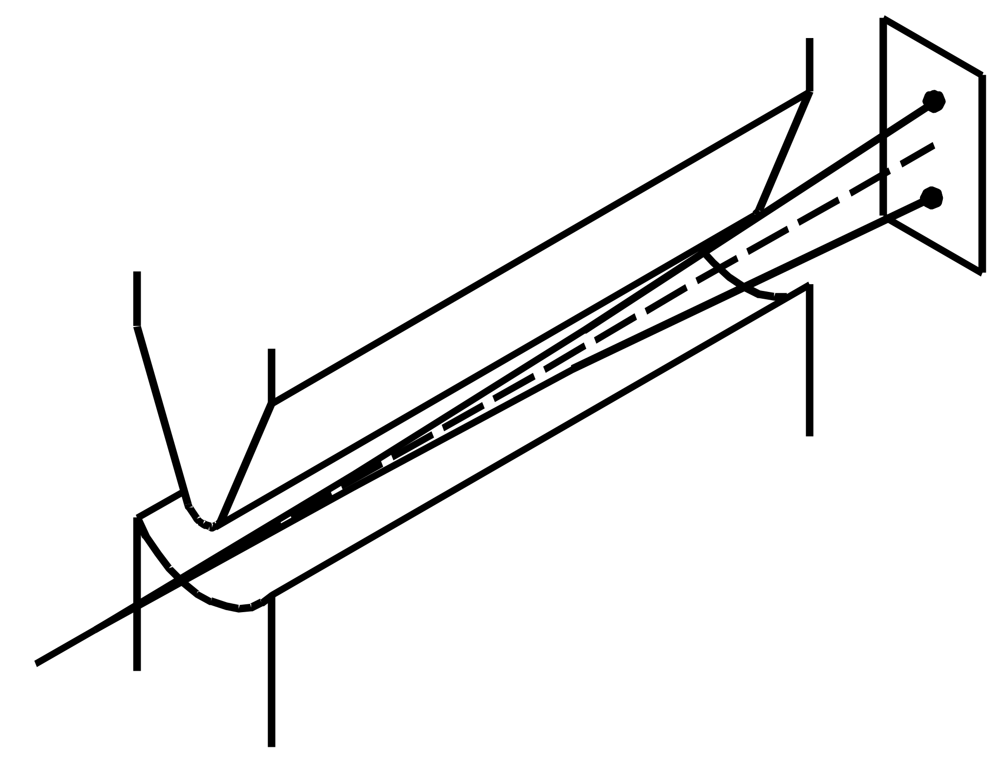
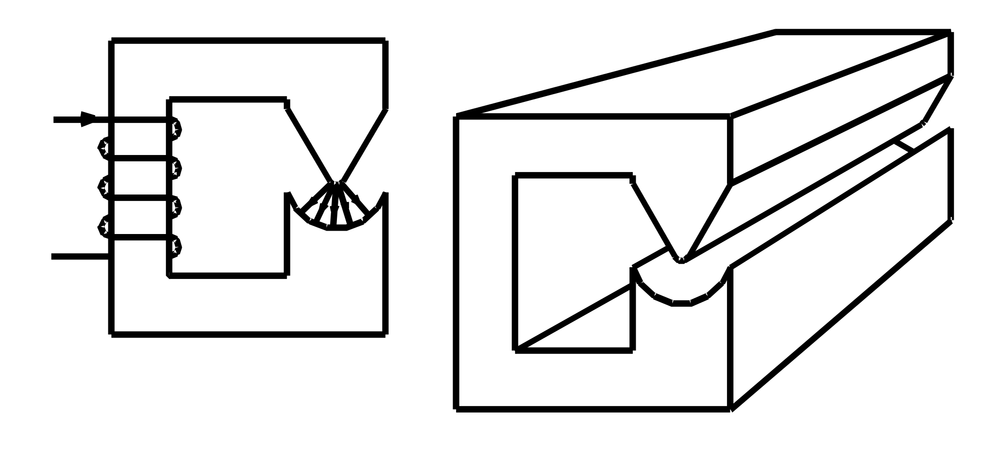
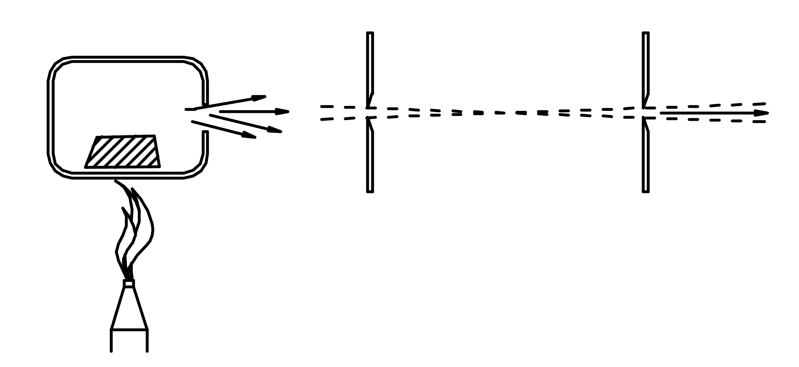
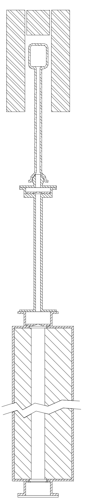

Capitolo 1
Esperimento di Stern-Gerlach
Questo esperimento fu ideato da Stern e da Gerlach nel 1921 con lo scopo di misurare il momento magnetico dei singoli atomi. Le prime prove furono effettuate con atomi di argento. I risultati andarono al di la delle aspettative, e noi oggi li possiamo usare come punto di partenza per lo studio della Meccanica Quantistica.

Descrizione dell’esperimento.

Un atomo con il suo momento magnetico m, può essere immaginato come una piccola calamita (fig.1). se la calamita viene immersa in un campo magnetico sui suoi poli si esercitano delle forze opposte. Se il campo è disuniforme le forze non sono bilanciate e la calamita accelera. La direzione verso la quale la calamita accelera, dipende dal gradiente del campo e dall’orientazione del momento magnetico m, ad esempio nella figura la calamita accelera verso l’alto.La figura 2 mostra il circuito magnetico che permette di realizzare un campo disomogeneo nel traferro.
L’esperimento di Stern-Gerlach si realizza facendo passare un fascio di atomi di argento, con una determinata velocità v, attraverso il traferro sagomato (fig.3).
Sotto l’azione del campo magnetico gli atomi vengono deflessi e alla fine del percorso si depositano su un vetrino. Dall’entità della deflessione misurata e dal gradiente del campo si può risalire al momento magnetico.

Fig.4
Il fascio di atomi viene generato vaporizzando dell’argento all’interno di un fornetto sul quale è praticato un piccolo foro, gli atomi che fuoriescono dal foro passano attraverso una coppia di fenditure che servono a focalizzare il fascio. Tutto il percorso, dal fornetto fino al vetrino, viene realizzato nel vuoto, per impedire che gli atomi urtino contro le molecole di cui è costituita l’aria fermandosi prima di arrivare al vetrino.
Descrizione dell’apparato sperimentale.
Le pagine che seguono riportano alcuni disegni di un apparato sperimentale progettato e costruito nel laboratorio didattico LAFIDIN.
A pagina tre sono rappresentati la camera dove viene vaporizzato l’argento e un tubo sul quale viene montata la prima fenditura di collimazione del fascio. La camera di vaporizzazione è realizzata in quarzo perché deve resistere alla temperatura di fusione dell’argento che è di circa mille gradi centigradi. Il riscaldamento avviene mediante un fornetto elettrico a resistenza all’interno del quale è disposta la camera di quarzo.
A pagina quattro si rappresenta la camera che racchiude le espansioni polari. Questa camera è stata progettata in modo da ridurre al minimo il volume di vuoto per poter usare una pompa da vuoto di piccole dimensioni. La lunghezza delle espansioni polari è stata scelta di sessanta centimetri, perché la pompa che abbiamo a disposizione permette di raggiungere un vuoto tale che il cammino libero medio degli atomi di argento è di circa un metro, quindi la lunghezza totale del fascio atomico, dal fornetto al vetrino non può superare il metro. All’ingresso della camera è montata la seconda fenditura di collimazione, ed all’uscita è disposto il vetrino. La distanza tra le due fenditure ed il loro spessore sono stati scelti in modo che l’angolo di apertura del fascio sia molto più piccolo dell’angolo di deflessione. La sagoma delle espansioni polari è progettata in modo da ottenere la massima deflessione possibile.
A pagina cinque è riportato il circuito magnetico completo che permette di realizzare la configurazione di campo. Si osservi che la camera che contiene le espansioni è fatta di acciaio inox, questo materiale non è ferromagnetico e quindi non costituisce un corto circuito per il flusso magnetico.
A pagina sei si mostrano tutti gli oggetti assemblati e si descrivono le varie operazioni che descrivono l’esperienza.

Una polvere di argento viene depositata nella camera di quarzo, la quale viene poi agganciata al resto dell’apparecchiatura mediante un raccordo sferico.Viene attivata la pompa da vuoto che porta la pressione a circa 2⋅10-5 bar, in modo da avere un cammino libero medio per gli atomi di argento di circa un metro.
Si alimenta il fornetto e dopo un po’ di tempo la camera di quarzo raggiunge la temperatura di fusione dell’argento, circa mille gradi centigradi.
L’argento fonde e, trovandosi a pressione quasi zero, bolle. Gli atomi vengono proiettati in tutte le direzioni, alcuni attraversano le due fenditure e formano un fascio ben collimato.
Gli atomi che hanno attraversato le due fenditure passano sotto le espansioni polari, vengono deflessi, e alla fine del loro cammino si depositano su un disco di vetro che è posto all’estremità dell’apparato.
Dopo un certo tempo si spegne il fornetto, si fa entrare aria nelle camere e si preleva il vetrino sul quale è possibile misurare la deflessione dovuta al momento magnetico degli atomi.
Risultati sperimentali.
Osservando il vetrino si nota che il fascio atomico si è diviso in due parti, una parte deflessa verso il basso ed un’altra verso l’alto. Lo spostamento dei due fasci è di circa sette millimetri rispetto alla posizione centrale. Dai valori del gradiente di campo e dello spostamento si risale al momento magnetico dei singoli atomi.
Interpretazione dei risultati.
Il fatto che il fascio si divide in due fasci distinti appare molto strano dal punto di vista della meccanica classica.
Gli atomi che escono dal fornetto dovrebbero avere un momento magnetico orientato in modo casuale, alcuni verso l’alto altri verso il basso, a sinistra, a destra, a quarantacinque gradi ed in tutte le possibili angolazioni. Gli atomi che hanno momento magnetico inclinato rispetto alla verticale dovrebbero essere deflessi di meno, quelli con momento magnetico orizzontale non dovrebbero essere deflessi affatto, ed in definitiva sul vetrino si sarebbe dovuto ottenere una macchia distribuita. Il fascio si sarebbe dovuto solo allargare e non dividere.
L’osservazione sperimentale ci mostra che, quando misuriamo la componente zeta del momento magnetico di un atomo di argento, possiamo ottenere solo due valori +m0 e –m0. Non esiste nessuna buona spiegazione di questo fatto in termini della meccanica classica, per capire questo fenomeno bisogna studiare la Meccanica Quantistica.